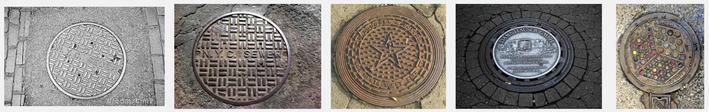
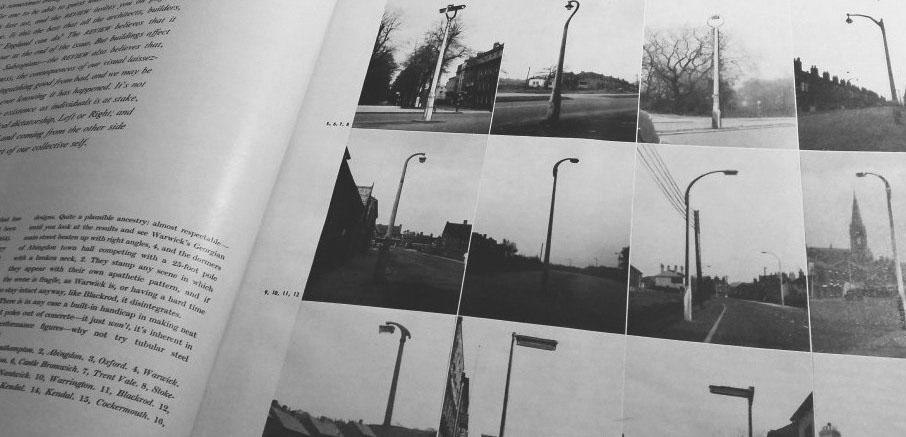
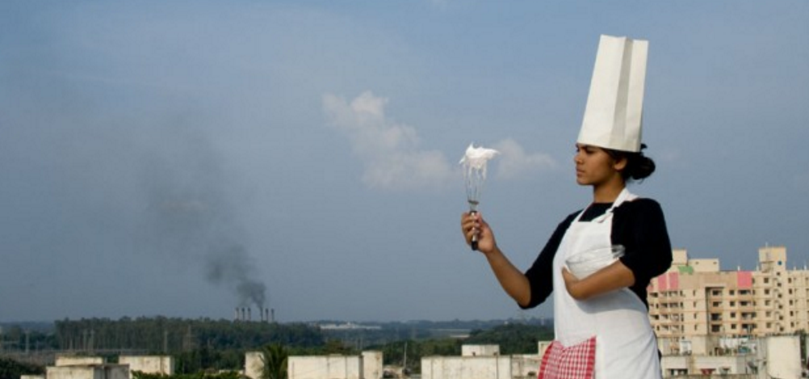

Ours is a time of dark ecology, where humans have become an environmental force.
What does this means for how we understand the environment and our relationship to it? This course investigates diverse local systems
such as power grids, water infrastructures and ecoystems around campus. Students will be introduced to methods drawn from both scientific and artistic
modes of inquiry including recording, mapping, poetic and scientific sensing, visualization, and photography. How can these practices be used to explicate the systems that sustain us? How might public interventions shift how we perceive our deep connections to environmental systems?
++1++ infrastucture taxonomies ++1++
What are the systems of infrastructure that support us on campus and how do they appear? Through observation and research your will explore and document the components, interfaces and affordances of these systems.

a1: infrastructure field guide
Field guides or manuals are published forms used to simplify, catalogue and demystify complex systems. As
Shannon Mattern observes, they are "necessarily reductive document(s)" that "atomize a specimen into recognizable parts". Your specimens are either water/wastewater, energy, information or solid waste/garbage systems on campus and one of the challenges of this task is what to include and what to omit.
In small groups you are to produce a field guide for your chosen system. Research and review
field guides made by other artists and designers and decide how you will catalogue your chosen system, how you will document it and how you will ultimately publish it.
You are to write a short text(s) to be included in your guide in response to your research and the
supplementary resources listed here for your system. This will be supported by a brief literature review to be submitted by each group in class on Sept 12th.
guides//categories//taxonomies//lists//species
Smudge Studio,
A Typological Guide to America's Ephemeral Nuclear Infrastructure (2012)
Los Angeles Urban Rangers,
Field Guide to the American Road Trip (2006)
Ingrid Burrington,
Seeing Networks (2014)
Amy Balkin,
The Atmosphere: A Guide(2013)
Situated Systems,
Experimental Zine (2016)
Center for Land Use Interpretation,
Land Use Database
Brooke Singer,
Toxic Sites (2015)
Brett Milligan,
Urban Field Manuals, (2013)

/*---IAN NAIRN, OUTRAGE, 1955---*/
++2++ investigating systems ++2++
What are the larger regional networks that Purchase infrastructures are connected with? What makes up these systems and where are they located? We will be making field trips to Westchester
waste water treatment plant, a materials recycling plant and
Indian Point nuclear power station and using ethnographic methods to record our experience of these sites.
a2: system listening
Many of the sites we will visit do not allow photography but permit sound recording. Given this ocular sensitivity, you are to use field recording techniques to document the sound of your chosen system of infrastructure during one of the class field trips or otherwise. From your recordings produce a sound work that responds to the experience of one or more sites relevant to your chosen system.
Explore and research other works of
sound ethnography.
listening//audio//tour//immediacy
Christina Kubisch,
Electrical Walks
Invisible 5, Audio Guide (2006)
Ernst Karel,
Materials Recovery Facility (2012)
Kevin T Allen,
American Transit (2006)
Paweł Wojtasik, Toby Lee, Ernst Karel,
Single Stream (2014)
Lucas Ilhein,
Small Soundworks for the Sleepy (2011)
++3++ environmental sense and sensibilies ++3++
Part 3 returns us to campus to consider our coexistence with other lifeforms and environments onsite. We will explore methods of collecting environmental data and experiment with how it can be performed. We will understanding data-driven practices as being less about sensors, and more about structuring participation and experiences that foster localized environmental literacy and stewardship.

/*---CENTER FOR GENOMIC GASTRONOMY, SMOG TASTING, 2009---*/
a3: eccentric interfaces
Propose and create a site specific intervention that draws attention to, translates, communicates with or amplifies the activities of another species of natural system on campus.
sensing//translations//amplification
Catherine D'Ignazio,
Babbling Brook (2014)
Terike Haapoja,
Entropy (2004)
Edwardo Navarro,
We who spin around you (2016)
Scale Free Network,
Drawing as biomonitoring (2009)
Natalie Jeremijenko,
OneTrees (2003)
Ellie Irons,
Invasive Pigments s(2014)